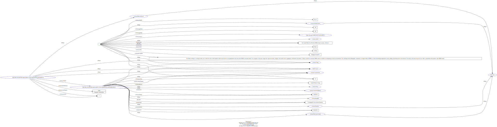

Loading results...
Enhanced search result preview
The data did not match any templates on file. Submit a request to the mailing list to request support for additional templates.
linter.structured-data.org/examples/schema.org/eg-0399-jsonld.html
an actual search result may display other content relating to your search terms here.
Content not used in snippet generation:
2012 Cataloging & Classification Quarterly 5 5Be Careful What You Wish For: FRBR, Some Lacunae, A Review
linter.structured-data.org/examples/schema.org/eg-0399-jsonld.html
an actual search result may display other content relating to your search terms here.
The library catalog as a catalog of works was an infectious idea, which together with research led to reconceptualization in the form of the FRBR conceptual model. Two categories of lacunae emerge--the expression entity, and gaps in the model such as aggregates and dynamic documents. Evidence needed to extend the FRBR model is available in contemporary research on instantiation. The challenge for the bibliographic community is to begin to think of FRBR as a form of knowledge organization system, adding a final dimension to classification. The articles in the present special issue offer a compendium of the promise of the FRBR model.
Content not used in snippet generation:
Be Careful What You Wish For: FRBR, Some Lacunae, A Review , Smiraglia, Richard P. #issue 368 360RDF output
No RDF fund.
<?xml
version='1.0' encoding='utf-8' ?>
<rdf:RDF
xml:base='http://linter.structured-data.org/examples/schema.org/eg-0399-jsonld.html'
xmlns:rdf='http://www.w3.org/1999/02/22-rdf-syntax-ns#'
xmlns:rdfs='http://www.w3.org/2000/01/rdf-schema#'
xmlns:schema='http://schema.org/'
xmlns:xml='http://www.w3.org/XML/1998/namespace'>
<rdfs:Class rdf:about='http://schema.org/Periodical'>
</rdfs:Class>
<rdfs:Class rdf:about='http://schema.org/PublicationIssue'>
</rdfs:Class>
<rdfs:Class rdf:about='http://schema.org/PublicationVolume'>
</rdfs:Class>
<rdfs:Class rdf:about='http://schema.org/ScholarlyArticle'>
</rdfs:Class>
<schema:PublicationIssue rdf:about='#issue'>
<rdf:type
rdf:resource='http://schema.org/Thing'></rdf:type>
<rdf:type
rdf:resource='http://www.w3.org/2000/01/rdf-schema#Resource'></rdf:type>
<rdf:type
rdf:resource='http://schema.org/CreativeWork'></rdf:type>
<schema:datePublished
rdf:datatype='http://schema.org/Date'>2012</schema:datePublished>
<schema:isPartOf>
<schema:Thing
rdf:about='#periodical'>
<rdf:type
rdf:resource='http://schema.org/Series'></rdf:type>
<rdf:type
rdf:resource='http://schema.org/PublicationVolume'></rdf:type>
<rdf:type
rdf:resource='http://schema.org/Periodical'></rdf:type>
<rdf:type
rdf:resource='http://schema.org/CreativeWorkSeries'></rdf:type>
<rdf:type
rdf:resource='http://www.w3.org/2000/01/rdf-schema#Resource'></rdf:type>
<rdf:type
rdf:resource='http://schema.org/CreativeWork'></rdf:type>
<rdf:type
rdf:resource='http://schema.org/Intangible'></rdf:type>
<rdfs:label>Cataloging & Classification
Quarterly</rdfs:label>
<schema:identifier>0163-9374</schema:identifier>
<schema:identifier>1544-4554</schema:identifier>
<schema:issn>0163-9374</schema:issn>
<schema:issn>1544-4554</schema:issn>
<schema:name>Cataloging & Classification
Quarterly</schema:name>
<schema:position>50</schema:position>
<schema:publisher>Taylor & Francis
Group</schema:publisher>
<schema:volumeNumber>50</schema:volumeNumber>
</schema:Thing>
</schema:isPartOf>
<schema:issueNumber>5</schema:issueNumber>
<schema:position>5</schema:position>
</schema:PublicationIssue>
<schema:Article>
<rdf:type
rdf:resource='http://schema.org/Thing'></rdf:type>
<rdf:type
rdf:resource='http://www.w3.org/2000/01/rdf-schema#Resource'></rdf:type>
<rdf:type
rdf:resource='http://schema.org/ScholarlyArticle'></rdf:type>
<rdf:type
rdf:resource='http://schema.org/CreativeWork'></rdf:type>
<rdfs:label>Be Careful What You Wish For: FRBR, Some Lacunae, A
Review</rdfs:label>
<schema:about>Works</schema:about>
<schema:about>Catalog</schema:about>
<schema:author>Smiraglia, Richard P.</schema:author>
<schema:description>The library catalog as a catalog of works was
an infectious idea, which together with research led to
reconceptualization in the form of the FRBR conceptual model. Two
categories of lacunae emerge--the expression entity, and gaps in the
model such as aggregates and dynamic documents. Evidence needed to
extend the FRBR model is available in contemporary research on
instantiation. The challenge for the bibliographic community is to begin
to think of FRBR as a form of knowledge organization system, adding a
final dimension to classification. The articles in the present special
issue offer a compendium of the promise of the FRBR
model.</schema:description>
<schema:isPartOf>#issue</schema:isPartOf>
<schema:name>Be Careful What You Wish For: FRBR, Some Lacunae, A
Review</schema:name>
<schema:pageEnd>368</schema:pageEnd>
<schema:pageStart>360</schema:pageStart>
<schema:sameAs
rdf:resource='https://doi.org/10.1080/01639374.2012.682254' />
</schema:Article>
</rdf:RDF>
ttl output
No ttl found.
@base
<http://linter.structured-data.org/examples/schema.org/eg-0399-jsonld.html>
.
@prefix rdf: <http://www.w3.org/1999/02/22-rdf-syntax-ns#> .
@prefix rdfs: <http://www.w3.org/2000/01/rdf-schema#> .
@prefix schema: <http://schema.org/> .
@prefix xsd: <http://www.w3.org/2001/XMLSchema#> .
schema:Periodical a rdfs:Class .
schema:PublicationIssue a rdfs:Class .
schema:PublicationVolume a rdfs:Class .
schema:ScholarlyArticle a rdfs:Class .
<http://linter.structured-data.org/examples/schema.org/eg-0399-jsonld.html#issue>
a schema:PublicationIssue,
schema:Thing,
rdfs:Resource,
schema:CreativeWork;
schema:datePublished "2012"^^schema:Date;
schema:isPartOf
<http://linter.structured-data.org/examples/schema.org/eg-0399-jsonld.html#periodical>;
schema:issueNumber "5";
schema:position "5" .
<http://linter.structured-data.org/examples/schema.org/eg-0399-jsonld.html#periodical>
a schema:Thing,
schema:Series,
schema:PublicationVolume,
schema:Periodical,
schema:CreativeWorkSeries,
rdfs:Resource,
schema:CreativeWork,
schema:Intangible;
rdfs:label "Cataloging & Classification Quarterly";
schema:identifier "0163-9374",
"1544-4554";
schema:issn "0163-9374",
"1544-4554";
schema:name "Cataloging & Classification Quarterly";
schema:position "50";
schema:publisher "Taylor & Francis Group";
schema:volumeNumber "50" .
[
a schema:Article,
schema:Thing,
rdfs:Resource,
schema:ScholarlyArticle,
schema:CreativeWork;
rdfs:label "Be Careful What You Wish For: FRBR, Some Lacunae, A
Review";
schema:about "Works",
"Catalog";
schema:author "Smiraglia, Richard P.";
schema:description "The library catalog as a catalog of works was an
infectious idea, which together with research led to
reconceptualization in the form of the FRBR conceptual model. Two
categories of lacunae emerge--the expression entity, and gaps in the
model such as aggregates and dynamic documents. Evidence needed to
extend the FRBR model is available in contemporary research on
instantiation. The challenge for the bibliographic community is to begin
to think of FRBR as a form of knowledge organization system, adding a
final dimension to classification. The articles in the present special
issue offer a compendium of the promise of the FRBR model.";
schema:isPartOf "#issue";
schema:name "Be Careful What You Wish For: FRBR, Some Lacunae, A
Review";
schema:pageEnd "368";
schema:pageStart "360";
schema:sameAs <https://doi.org/10.1080/01639374.2012.682254>
] .
RDFa output
No RDFa found.
<?xml
version='1.0' encoding='utf-8' ?>
<!DOCTYPE html>
<html prefix='rdf: http://www.w3.org/1999/02/22-rdf-syntax-ns# rdfs:
http://www.w3.org/2000/01/rdf-schema# schema: http://schema.org/'
xmlns='http://www.w3.org/1999/xhtml'>
<head>
<base
href='http://linter.structured-data.org/examples/schema.org/eg-0399-jsonld.html'
/>
<title>Cataloging & Classification Quarterly</title>
</head>
<body>
<div resource='schema:Periodical' typeof='rdfs:Class'>
<span class='type'>rdfs:Class</span>
</div>
<div resource='schema:PublicationIssue' typeof='rdfs:Class'>
<span class='type'>rdfs:Class</span>
</div>
<div resource='schema:PublicationVolume' typeof='rdfs:Class'>
<span class='type'>rdfs:Class</span>
</div>
<div resource='schema:ScholarlyArticle' typeof='rdfs:Class'>
<span class='type'>rdfs:Class</span>
</div>
<div resource='#issue' typeof='schema:PublicationIssue schema:Thing
rdfs:Resource schema:CreativeWork'>
<span class='type'>schema:PublicationIssue schema:Thing
rdfs:Resource schema:CreativeWork</span>
<div class='property'>
<span class='label'>
schema:datePublished
</span>
<span datatype='schema:Date'
property='schema:datePublished'>2012</span>
</div>
<div class='property'>
<span class='label'>
schema:isPartOf
</span>
<div rel='schema:isPartOf' resource='#periodical'
typeof='schema:Thing schema:Series schema:PublicationVolume
schema:Periodical schema:CreativeWorkSeries rdfs:Resource
schema:CreativeWork schema:Intangible'>
<span class='type'>schema:Thing schema:Series
schema:PublicationVolume schema:Periodical schema:CreativeWorkSeries
rdfs:Resource schema:CreativeWork schema:Intangible</span>
<h1 property='rdfs:label'>Cataloging & Classification
Quarterly</h1>
<div class='property'>
<span class='label'>
schema:identifier
</span>
<ul>
<li property='schema:identifier'>0163-9374</li>
<li property='schema:identifier'>1544-4554</li>
</ul>
</div>
<div class='property'>
<span class='label'>
schema:issn
</span>
<ul>
<li property='schema:issn'>0163-9374</li>
<li property='schema:issn'>1544-4554</li>
</ul>
</div>
<div class='property'>
<span class='label'>
schema:name
</span>
<span property='schema:name'>Cataloging & Classification
Quarterly</span>
</div>
<div class='property'>
<span class='label'>
schema:position
</span>
<span property='schema:position'>50</span>
</div>
<div class='property'>
<span class='label'>
schema:publisher
</span>
<span property='schema:publisher'>Taylor & Francis
Group</span>
</div>
<div class='property'>
<span class='label'>
schema:volumeNumber
</span>
<span property='schema:volumeNumber'>50</span>
</div>
</div>
</div>
<div class='property'>
<span class='label'>
schema:issueNumber
</span>
<span property='schema:issueNumber'>5</span>
</div>
<div class='property'>
<span class='label'>
schema:position
</span>
<span property='schema:position'>5</span>
</div>
</div>
<div resource='_:b0' typeof='schema:Article schema:Thing
rdfs:Resource schema:ScholarlyArticle schema:CreativeWork'>
<span class='type'>schema:Article schema:Thing rdfs:Resource
schema:ScholarlyArticle schema:CreativeWork</span>
<h1 property='rdfs:label'>Be Careful What You Wish For: FRBR, Some
Lacunae, A Review</h1>
<div class='property'>
<span class='label'>
schema:about
</span>
<ul>
<li property='schema:about'>Works</li>
<li property='schema:about'>Catalog</li>
</ul>
</div>
<div class='property'>
<span class='label'>
schema:author
</span>
<span property='schema:author'>Smiraglia, Richard P.</span>
</div>
<div class='property'>
<span class='label'>
schema:description
</span>
<span property='schema:description'>The library catalog as a
catalog of works was an infectious idea, which together with research
led to reconceptualization in the form of the FRBR conceptual model. Two
categories of lacunae emerge--the expression entity, and gaps in the
model such as aggregates and dynamic documents. Evidence needed to
extend the FRBR model is available in contemporary research on
instantiation. The challenge for the bibliographic community is to begin
to think of FRBR as a form of knowledge organization system, adding a
final dimension to classification. The articles in the present special
issue offer a compendium of the promise of the FRBR model.</span>
</div>
<div class='property'>
<span class='label'>
schema:isPartOf
</span>
<span property='schema:isPartOf'>#issue</span>
</div>
<div class='property'>
<span class='label'>
schema:name
</span>
<span property='schema:name'>Be Careful What You Wish For: FRBR,
Some Lacunae, A Review</span>
</div>
<div class='property'>
<span class='label'>
schema:pageEnd
</span>
<span property='schema:pageEnd'>368</span>
</div>
<div class='property'>
<span class='label'>
schema:pageStart
</span>
<span property='schema:pageStart'>360</span>
</div>
<div class='property'>
<span class='label'>
schema:sameAs
</span>
<a href='https://doi.org/10.1080/01639374.2012.682254'
property='schema:sameAs'>https://doi.org/10.1080/01639374.2012.682254</a>
</div>
</div>
</body>
</html>
JSON+LD output
No json ld found.
{
"@context": {
"rdfs": "http://www.w3.org/2000/01/rdf-schema#",
"schema": "http://schema.org/"
},
"@graph": [
{
"@id": "schema:PublicationIssue",
"@type": "rdfs:Class"
},
{
"@id": "schema:PublicationVolume",
"@type": "rdfs:Class"
},
{
"@id": "#periodical",
"rdfs:label": "Cataloging & Classification Quarterly",
"schema:volumeNumber": "50",
"schema:position": "50",
"@type": [
"schema:Thing",
"schema:Series",
"schema:PublicationVolume",
"schema:Periodical",
"schema:CreativeWorkSeries",
"rdfs:Resource",
"schema:CreativeWork",
"schema:Intangible"
],
"schema:identifier": [
"0163-9374",
"1544-4554"
],
"schema:issn": [
"0163-9374",
"1544-4554"
],
"schema:publisher": "Taylor & Francis Group",
"schema:name": "Cataloging & Classification Quarterly"
},
{
"@id": "schema:Periodical",
"@type": "rdfs:Class"
},
{
"@id": "#issue",
"schema:position": "5",
"schema:datePublished": {
"@type": "schema:Date",
"@value": "2012"
},
"@type": [
"schema:PublicationIssue",
"schema:Thing",
"rdfs:Resource",
"schema:CreativeWork"
],
"schema:isPartOf": {
"@id": "#periodical"
},
"schema:issueNumber": "5"
},
{
"@id": "_:b0",
"rdfs:label": "Be Careful What You Wish For: FRBR, Some Lacunae, A
Review",
"schema:sameAs": {
"@id": "https://doi.org/10.1080/01639374.2012.682254"
},
"schema:description": "The library catalog as a catalog of works
was an infectious idea, which together with research led to
reconceptualization in the form of the FRBR conceptual model. Two
categories of lacunae emerge--the expression entity, and gaps in the
model such as aggregates and dynamic documents. Evidence needed to
extend the FRBR model is available in contemporary research on
instantiation. The challenge for the bibliographic community is to begin
to think of FRBR as a form of knowledge organization system, adding a
final dimension to classification. The articles in the present special
issue offer a compendium of the promise of the FRBR model.",
"schema:about": [
"Works",
"Catalog"
],
"@type": [
"schema:Article",
"schema:Thing",
"rdfs:Resource",
"schema:ScholarlyArticle",
"schema:CreativeWork"
],
"schema:isPartOf": "#issue",
"schema:author": "Smiraglia, Richard P.",
"schema:pageStart": "360",
"schema:name": "Be Careful What You Wish For: FRBR, Some Lacunae, A
Review",
"schema:pageEnd": "368"
},
{
"@id": "schema:ScholarlyArticle",
"@type": "rdfs:Class"
}
]
}
Graph:
No Graph Found.

Raw structured data extracted from the page:
No structured data detected.
| @id | http://schema.org/Periodical(1) |
| rdf:type | rdfs:Class |
| @id | http://schema.org/PublicationIssue(1) |
| rdf:type | rdfs:Class |
| @id | http://schema.org/PublicationVolume(1) |
| rdf:type | rdfs:Class |
| @id | http://schema.org/ScholarlyArticle(1) |
| rdf:type | rdfs:Class |
| @id | http://linter.structured-data.org/examples/schema.org/eg-0399-jsonld.html#issue(0) | ||||||||||||||||||
| rdf:type | schema:PublicationIssue schema:Thing rdfs:Resource schema:CreativeWork | ||||||||||||||||||
| schema:datePublished | 2012 | ||||||||||||||||||
| schema:isPartOf |
|
||||||||||||||||||
| schema:issueNumber | 5 | ||||||||||||||||||
| schema:position | 5 |
| rdf:type | schema:Article schema:Thing rdfs:Resource schema:ScholarlyArticle schema:CreativeWork |
| rdfs:label | Be Careful What You Wish For: FRBR, Some Lacunae, A Review |
| schema:about |
|
| schema:author | Smiraglia, Richard P. |
| schema:description | The library catalog as a catalog of works was an infectious idea, which together with research led to reconceptualization in the form of the FRBR conceptual model. Two categories of lacunae emerge--the expression entity, and gaps in the model such as aggregates and dynamic documents. Evidence needed to extend the FRBR model is available in contemporary research on instantiation. The challenge for the bibliographic community is to begin to think of FRBR as a form of knowledge organization system, adding a final dimension to classification. The articles in the present special issue offer a compendium of the promise of the FRBR model. |
| schema:isPartOf | #issue |
| schema:name | Be Careful What You Wish For: FRBR, Some Lacunae, A Review |
| schema:pageEnd | 368 |
| schema:pageStart | 360 |
| schema:sameAs | https://doi.org/10.1080/01639374.2012.682254 |
Parser statistics
| Reader | RDF::RDFa::Reader |
| Statements | 44 |
| Templates | schema:CreativeWork |